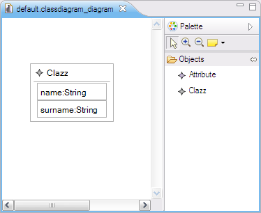

Customizing a GMF editor generated by EuGENia¶
So now you have created the first version of your GMF editor with EuGENia and it looks almost like what you want - just a few tweaks and you are there. As EuGENia doesn't support all the features of GMF (otherwise it would be just as complex) you are finding that the tweaks you want to do are not supported by the annotations provided by EuGENia and therefore you need to go change one or more of the generated .gmfgraph, .gmfmap and .gmftool models manually. If you decide to do this, you won't be able to use EuGENia any more for your editor because it will overwrite your changes.
We've come across this situation many times and decided to do something about it. Since merging such complex models sensibly is virtually impossible, we've implemented support for user-defined transformations that complement the built-in transformations provided by EuGENia. Let's go straight to an example. We have the following classdiagram metamodel:
@namespace(uri="classdiagram", prefix="classdiagram")
package classdiagram;
@gmf.diagram
class Model {
val Clazz[*] classes;
}
@gmf.node(label="name", figure="rectangle")
class Clazz {
attr String name;
@gmf.compartment(layout="list", collapsible="false")
val Attribute[*] attributes;
}
@gmf.node(label="name,type", figure="rectangle",
label.icon="false", label.pattern="{0}:{1}")
class Attribute {
attr String name;
attr String type;
}
and we follow the standard EuGENia procedure to generate a GMF editor from it. The editor looks like this:

which is almost what we want. What we really want is something like this:

To get this, we need to customize the classdiagram.gmfgraph model like this

so that we can get this:

To perform these changes automatically every time EuGENia is executed on classdiagram.ecore, we can create a new EOL transformation called ECore2GMF.eol and place it in the same folder with classdiagram.ecore. EuGENia will then pick it up and execute it after the built-in transformation every time we invoke Generate GMF tool, graph and map models action. In our case, the ECore2GMF.eol customization transformation looks like this:
// Find the compartment figure
var clazzAttributesCompartmentFigure = GmfGraph!Rectangle.all.
selectOne(r|r.name = 'ClazzAttributesCompartmentFigure');
// ... and add a stack layout to it
clazzAttributesCompartmentFigure.layout = new GmfGraph!StackLayout;
// Find the attribute figure
var attributeFigure = GmfGraph!Rectangle.all.
selectOne(r|r.name = 'AttributeFigure');
// ... delete its border
delete attributeFigure.border;
// ... set its outline to false
attributeFigure.outline = false;
// ... and add a preferred size to it
var preferredSize = new GmfGraph!Dimension;
preferredSize.dx = 100;
preferredSize.dy = 16;
attributeFigure.preferredSize = preferredSize;
Similarly, if we needed to customize the logic behind the Synchronize GMF Gen model action, we'd need to define a FixGMFGen.eol transformation next to classdiagram.ecore.
What models can I access from the ECore2GMF.eol and FixGMFGen.eol transformations?¶
In the Ecore2GenModel.eol transformation and the later FixGenModel.eol transformation you can access the ECore metamodel (named Ecore) and the EMF GenModel model (named GenModel). You can run Ecore2GenModel.eol or FixGenModel.eol manually by right-clicking on the .ecore file and selecting "Generate EMF GenModel" or "Synchronize EMF GenModel", respectively.
In the ECore2GMF.eol transformation you can access the ECore metamodel (named ECore), the tool model (named GmfTool), the graph model (named GmfGraph) and the map model (named GmfMap). You can regenerate the GMF models and run ECore2GMF.eol manually by right-clicking on the .ecore file and selecting "Generate GMF tool, graph and map models".
In the FixGMFGen.eol transformation you can access the ECore metamodel (named ECore), and the generator model (named GmfGen). You can run FixGMFGen.eol manually by right-clicking on the .gmfgen model (which should have been created previously from the .gmfmap using standard GMF tools) and selecting "Synchronize GMFGen".
How do I customize the generated code?¶
GMF generates code in two steps:
- During the GmfMap → GmfGen transformation: small fragments are embedded into the GmfGen model, using GMF figure templates.
- From the GmfGen model: the embedded bits are dumped to certain files, and additional code is generated using the rest of the GMF templates.
To use your own GMF figure templates, you need to place them under a folder called templates-gmfgraph, which should be a sibling of the folder where your .emf or .ecore files are stored. If it exists, Eugenia will use its templates for the GmfMap → GmfGen transformation.
To customize the code generated from the GmfGen model, you will need to use EuGENia's patch generation and application functionality or GMF dynamic templates.
Getting assistance in writing these transformations¶
You'll most probably find Exeed and the EPackage Registry view to be useful for writing such transformations.